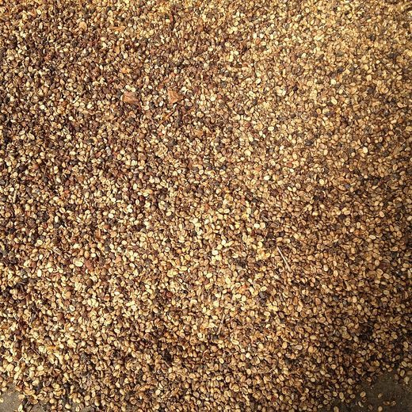
Lot 01 · Washed
Green Arabica — Screen 15+
Fully washed, sun-dried on raised beds and hand-sorted before bagging. A clean, bright, citric cup with black-tea sweetness, dispatched at 10.5–11.5% moisture.
Coffee Sourcing · Processing · Export
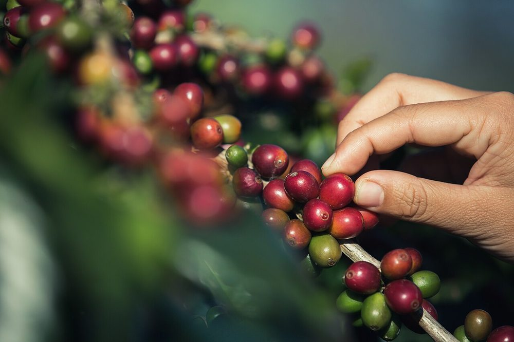
Tumu Coffee Trading buys ripe cherry and parchment from smallholder farms, processes it at origin, and ships washed arabica and natural robusta — graded, cupped and traceable from harvest to port.
Sourcing
We work season-long with smallholder farmers — prices agreed before harvest, cherry collected at the farm gate, and payment made on delivery. It is how coffee should be bought.
Every delivery is recorded with its farm, plot and picking date, so each bag we ship carries a lot code that leads back to the hillside where the cherry was picked.
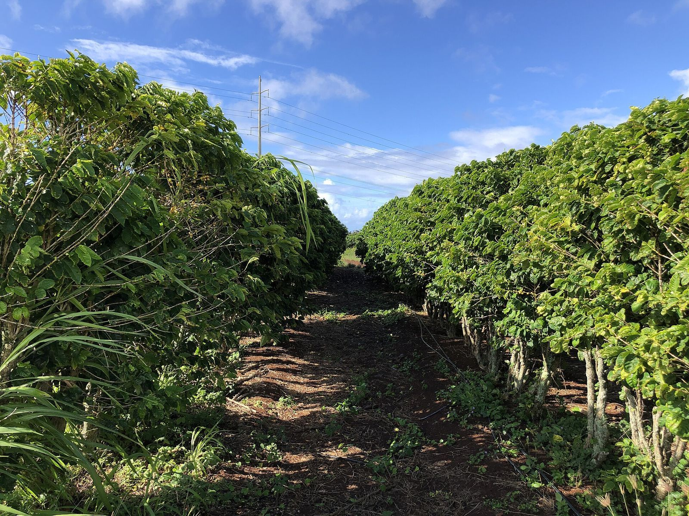
Sourcing in pictures
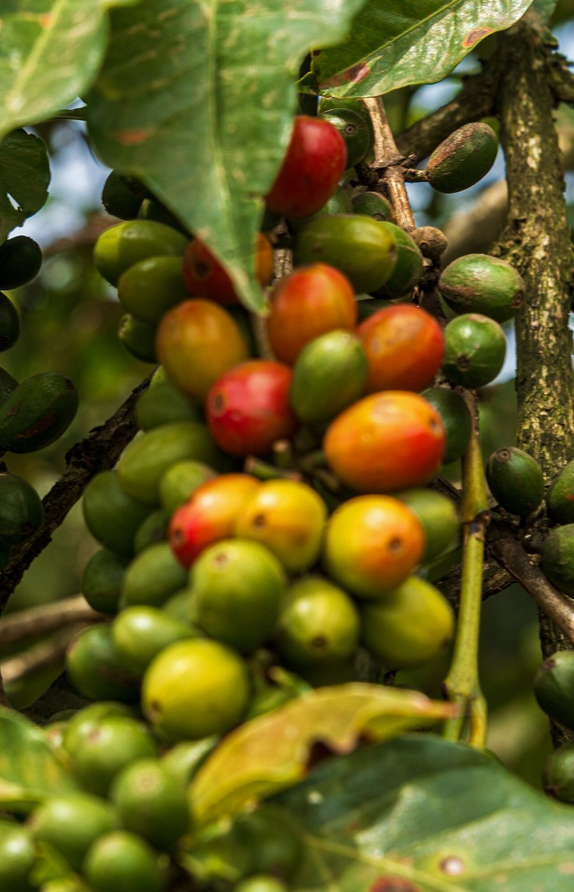
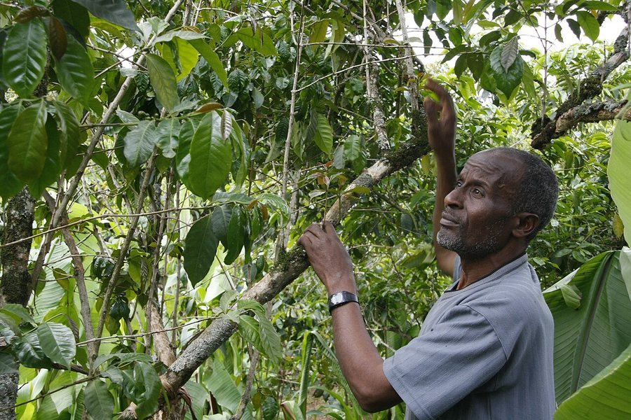
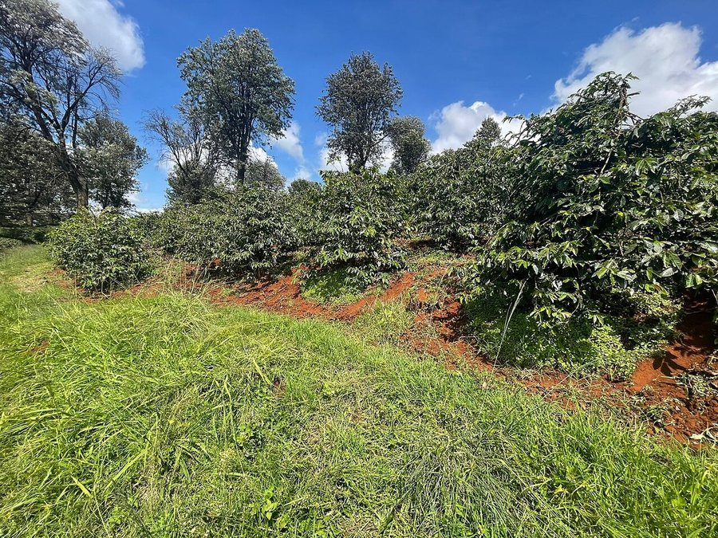
What we trade
Every lot is dried, milled, graded and cupped in our quality lab before it is offered for sale.

Fully washed, sun-dried on raised beds and hand-sorted before bagging. A clean, bright, citric cup with black-tea sweetness, dispatched at 10.5–11.5% moisture.
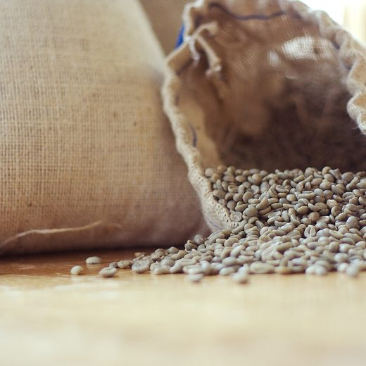
Dried in the whole cherry for heavy body, low acidity and a deep, clean finish. Grown at elevation and double-sorted at intake.
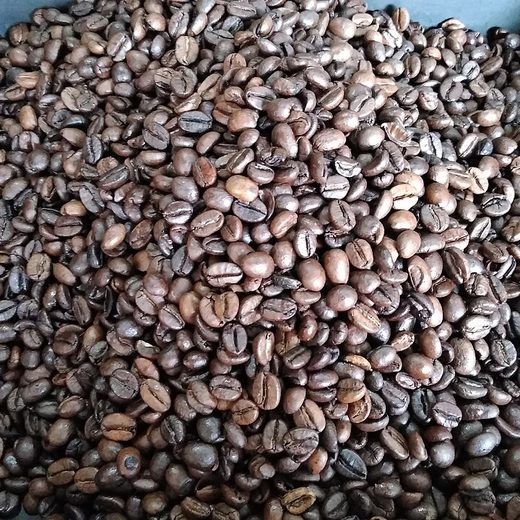
Medium roast profiles for cafés, hotels and retailers — roasted to order and shipped whole-bean or ground in one-way valve packaging.
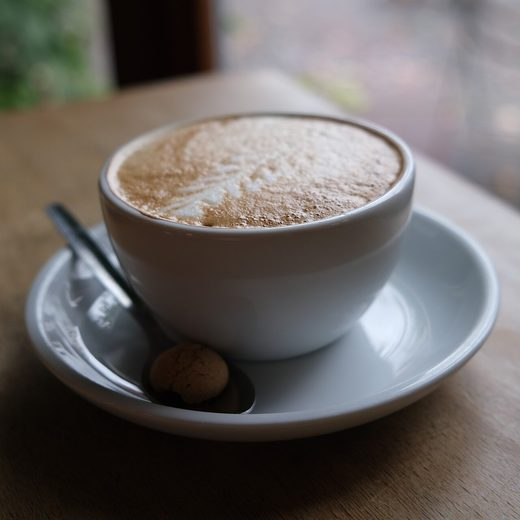
Every inbound lot is sample-roasted and cupped on arrival. Score sheets, screen size and moisture readings travel with each lot code.
How coffee moves
Five steps between the tree and the port, each one owned by our team at the station.
Only red cherry is picked, then floated and sorted the same afternoon.
Washed lots are pulped, fermented clean and washed in fresh channel water.
Parchment rests on raised beds, raked through the day to a stable 10.5–11.5% moisture.
Hulled, screen-graded and hand-sorted — defects removed bean by bean.
Packed in 60kg jute with traceable lot codes, then moved to port.
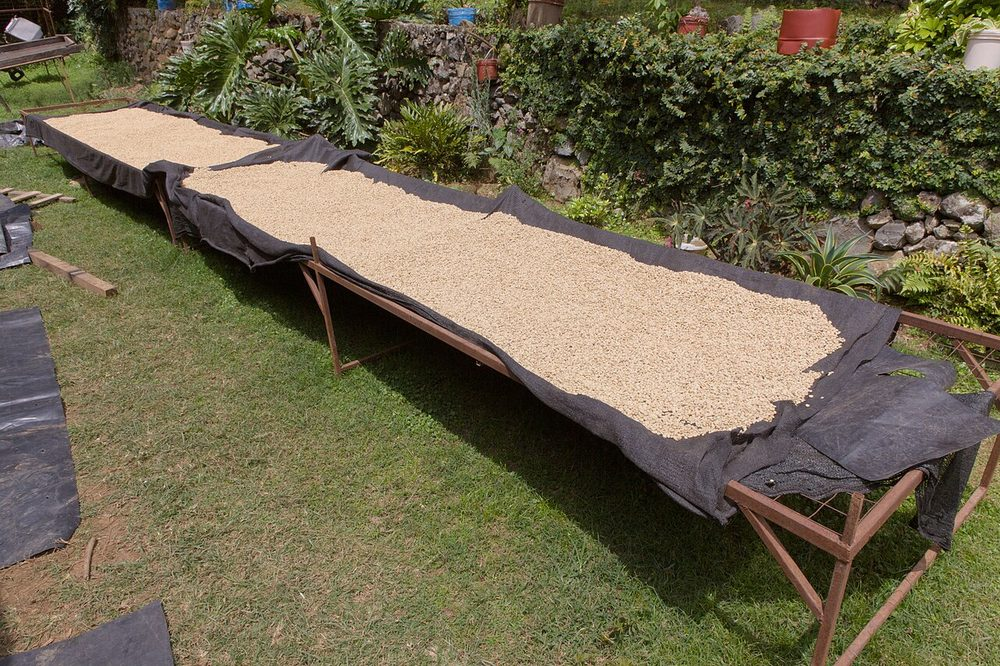
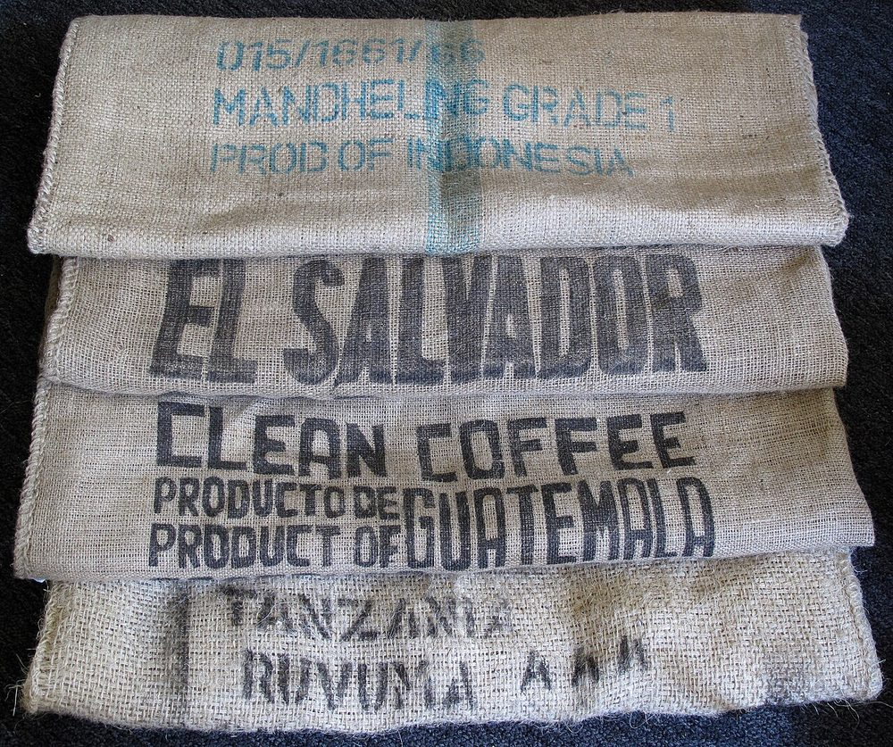
Talk to Tumu
Tell us what you are sourcing — arabica or robusta, washed or natural, volumes and destination port. We reply within one working day.